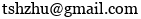
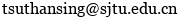

Tansheng Zhu 朱坦晟
I am a fourth-year undergraduate at Zhiyuan College, Shanghai Jiao Tong University, majoring in mathematics with a minor in finance. In Fall 2025, I will join the Institute for Interdisciplinary Information Sciences (IIIS) at Tsinghua University as a Ph.D. student, advised by Prof. Jian Li. At SJTU, I am very fortunate to be advised by Prof. Zhenli Xu, with whom I am working on my undergraduate thesis. During my exchange at The Chinese University of Hong Kong, I served as a research intern in Prof. Fenglei Fan's group and continued this role in the subsequent summer internship. |
My research interests lie in machine learning theory, optimization, and information theory.
Under the guidance of Prof. Zhenli Xu, I am currently researching efficient algorithms for Bayesian optimization and reinforcement learning. Also, under the supervision of Prof. Fenglei Fan, I am investigating the properties of finitely wide neural networks as their depth approaches infinity, with the aim of uncovering the duality between width and depth.
Education
Aug. 2021–June 2025 (expected), B.S. in Mathematics (Hons), Minor in Finance, Zhiyuan College, Shanghai Jiao Tong University
Jan. 2024–May 2024, Exchange student, Department of Mathematics, The Chinese University of Hong Kong
Honors and Awards
May 2024, Winning Prize in S.-T. Yau College Student Mathematics Contest on Appl. & Comp. Mathematics
May 2024, Finalist Winner in Mathematical Contest in Modeling (Top 3% in 18000+ teams)
Nov. 2023, 1st Prize in Shanghai Division of Chinese Mathematics Competitions
Oct. 2020, 1st Prize in Chinese High School Mathematics League
2023, Huawei Scholarship (Top 5%, Shanghai Jiao Tong University)
2022, Zhiyuan Outstanding Leader Scholarship (25 winners each year, Shanghai Jiao Tong University)
2022, A-class Academic Excellence Scholarship (Top 1%, Shanghai Jiao Tong University)
2022, Merit Student (Top 1/21, Shanghai Jiao Tong University)
2021, 2022, 2023, Zhiyuan Honors Scholarship (Top 5%, Shanghai Jiao Tong University)
Contact
Email: ; 
GitHub: tshzhu (Tansheng Zhu)
 |